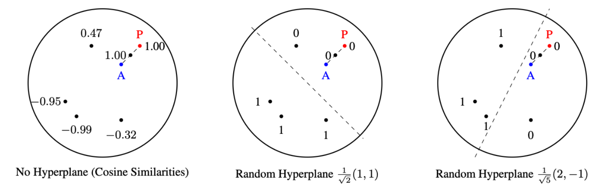

<section id="Preprints" class="mb-5">
    <div class="container">

        <hr>
        <h2 class="mb-4">Preprints</h2>

        <!-- ===================== PAPER 1 ===================== -->
        <div class="row align-items-center mb-5">

            <div class="col-lg-4 text-center">
                
            </div>

            <div class="col-lg-8">

                <h5 class="papertitle">
                    CoRe-GS: Coarse-to-Refined Gaussian Splatting with Semantic Object Focus
                </h5>

                <p class="mb-1">
                    <strong>H. Schieber</strong>,
                    D. Frischmann, S. Boche, V. Schaack,
                    A. Schoellig, S. Leutenegger, D. Roth
                </p>

                <p class="text-muted mb-2">2025</p>

                <!-- Buttons -->
                <div class="d-flex flex-wrap gap-2 mb-3">
                    <a class="btn btn-dark btn-sm"
                       data-bs-toggle="collapse"
                       href="#collapseCoRe"
                       role="button"
                       aria-expanded="false"
                       aria-controls="collapseCoRe">
                        Abstract
                    </a>

                    <a class="btn btn-dark btn-sm"
                       href="https://hannahhaensen.github.io/core-gs/"
                       target="_blank"
                       rel="noopener">
                        Project Page
                    </a>

                    <a class="btn btn-dark btn-sm"
                       href="https://arxiv.org/abs/2509.04859"
                       target="_blank"
                       rel="noopener">
                        ArXiv
                    </a>
                </div>

                <!-- Abstract Collapse -->
                <div class="collapse" id="collapseCoRe">
                    <div class="card card-body small">
                        <p class="mb-0">
                            Mobile reconstruction for autonomous aerial robotics holds strong potential for critical
                            applications such as tele-guidance and disaster response. These tasks demand accurate
                            3D reconstruction and fast scene processing.
                            <br><br>
                            We propose <strong>CoRe-GS</strong>, a coarse-to-refined semantic Gaussian Splatting
                            approach that focuses reconstruction on semantically relevant points of interest,
                            reducing training time.

                        </p>
                    </div>
                </div>

            </div>
        </div>

        <!-- ===================== PAPER 2 ===================== -->
        <div class="row align-items-center mb-5">

            <div class="col-lg-4 text-center">
                
            </div>

            <div class="col-lg-8">

                <h5 class="papertitle">
                    Locality-Sensitive Hashing for Efficient Hard Negative Contrastive Learning
                </h5>

                <p class="mb-1">
                    F. Deuser, P. Hausenblas,
                    <strong>H. Schieber</strong>,
                    D. Roth, M. Werner, N. Oswald
                </p>

                <p class="text-muted mb-2">2025</p>

                <!-- Buttons -->
                <div class="d-flex flex-wrap gap-2 mb-3">
                    <a class="btn btn-dark btn-sm"
                       data-bs-toggle="collapse"
                       href="#collapseLSH"
                       role="button"
                       aria-expanded="false"
                       aria-controls="collapseLSH">
                        Abstract
                    </a>
                    <a class="btn btn-dark btn-sm"
                       href="https://arxiv.org/pdf/2505.17844"
                       target="_blank"
                       rel="noopener">
                        ArXiv
                    </a>
                </div>
                <!-- Abstract Collapse -->
                <div class="collapse" id="collapseLSH">
                    <div class="card card-body small">
                        <p class="mb-0">
                            We propose a GPU-friendly Locality-Sensitive Hashing (LSH) scheme
                            for efficient hard negative mining in contrastive learning.
                            <br><br>
                            Our method quantizes real-valued feature vectors into binary
                            representations enabling approximate nearest neighbor search.
                            <br><br>
                            It achieves comparable or better performance with significantly
                            reduced computational cost across textual and visual datasets.
                        </p>
                    </div>
                </div>
            </div>
        </div>
    </div>
</section>